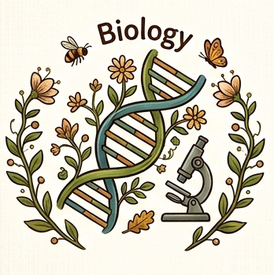
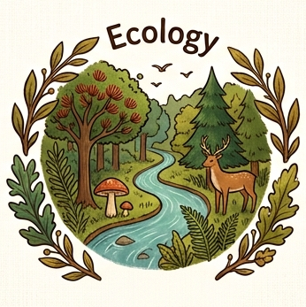
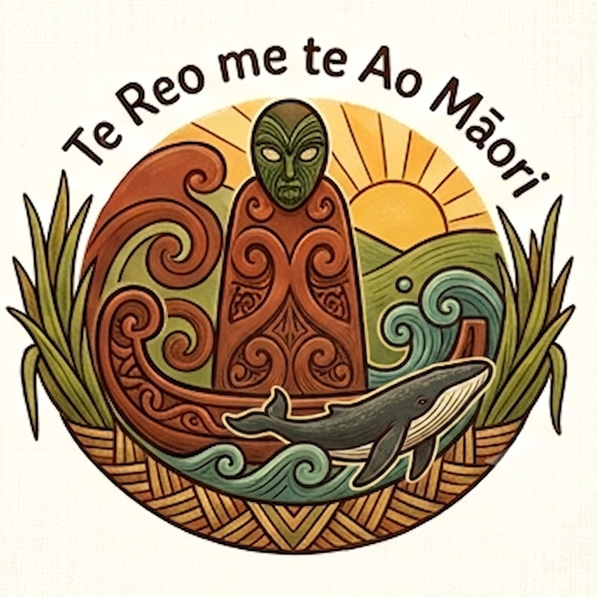

Kia ora,
I'm Johnathan, an ecologist-wannabe currently based in Tāmaki Makaurau, Aotearoa.
I spun up this website for fun, but also to track my learning and share my latest progress and discoveries.
Click on a topic below to see what I've been up to in that realm.


